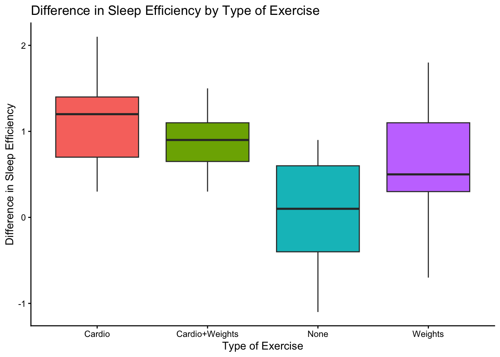
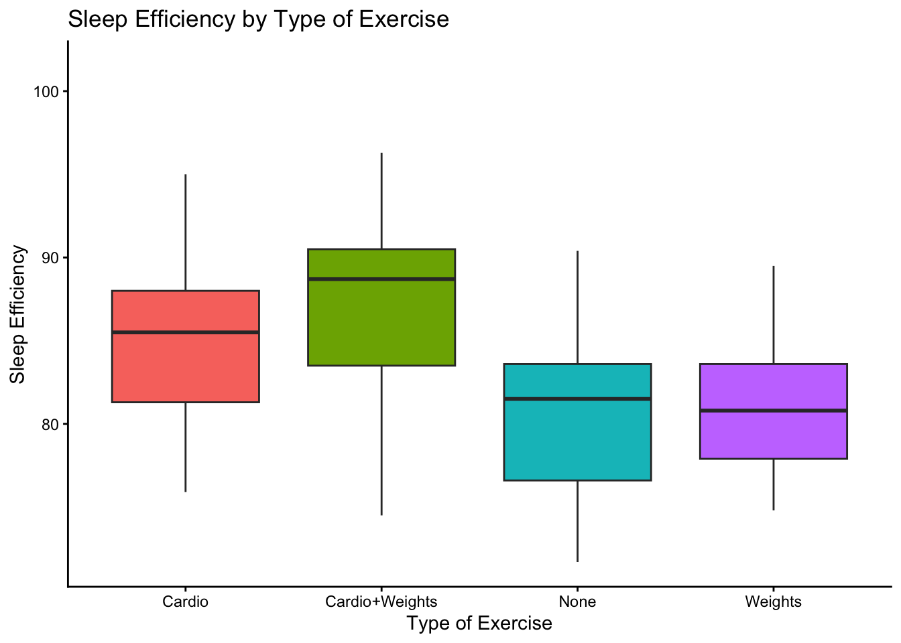
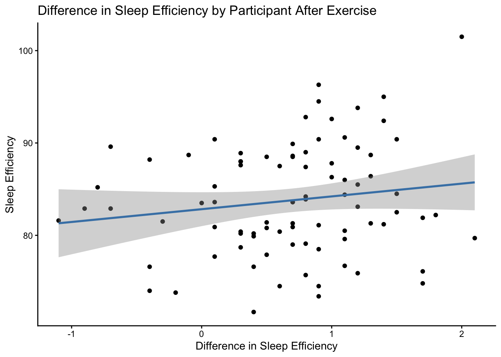

library(readxl)
library(tidyverse)
library(supernova)
library(mosaic)
library(ggplot2)
library(WRS2)
library(knitr)
participant_info_midterm <- read_excel("participant_info_midterm.xlsx")
sleep_data_midterm <- read_excel("sleep_data_midterm.xlsx")Assignment 3 (Midterm) - Sleep & Exercise Analysis
Introduction
In this assignment, I have been tasked with analyzing data from Dr. Matthew Walker’s sleep lab to determine which exercise type best improves sleep quality and duration. I used both datasets provided to create derived variables with which I ran descriptive statistics and simple visualizations. I followed these preliminary insights with t-tests, ANOVAs, and post-hoc tests.
Setup & Data Import
kable(head(participant_info_midterm[, 1:4]))| ID | Exercise_Group | Sex | Age |
|---|---|---|---|
| P001 | NONE | Male | 35 |
| P002 | Nonee | Malee | 57 |
| P003 | None | Female | 26 |
| P004 | None | Female | 29 |
| P005 | None | Male | 33 |
| P006 | None | Female | 33 |
kable(head(sleep_data_midterm[, 1:4]))| ID | Pre_Sleep | Post_Sleep | Sleep_Efficiency |
|---|---|---|---|
| P001 | zzz-5.8 | 4.7 | 81.6 |
| P002 | Sleep-6.6 | 7.4 | 75.7 |
| P003 | NA | 6.2 | 82.9 |
| P004 | SLEEP-7.2 | 7.3 | 83.6 |
| P005 | score-7.4 | 7.4 | 83.5 |
| P006 | Sleep-6.6 | 7.1 | 88.5 |
In this first chunk, I loaded all of my packages and uploaded the two datasets I will be working with.
TipDid you know?
You can actually upload multiple sheets of data from one file without separating them. In this assignment, I was unaware of that possibility, and I ended up saving the individual sheets as multiple files in order to successfully upload both datasets. In the next chapter, you’ll see how I used the function lapply() to upload multiple sheets of data at once!
Merge & Base Cleaning
unique(participant_info_midterm$Exercise_Group) [1] "NONE" "Nonee" "None" "N"
[5] "Cardio" "C" "WEIGHTZ" "WEIGHTS"
[9] "WEIGHTSSS" "Cardio+Weights" "CW" "C+W" participant_info_midterm <- participant_info_midterm %>%
mutate(Exercise_Group = dplyr::recode(Exercise_Group,
"NONE" = "None",
"Nonee" = "None",
"N" = "None",
"C" = "Cardio",
"WEIGHTZ" = "Weights",
"WEIGHTS" = "Weights",
"WEIGHTSSS" = "Weights",
"CW" = "Cardio+Weights",
"C+W" = "Cardio+Weights"))
unique(participant_info_midterm$Sex)[1] "Male" "Malee" "Female" "Femalee" "F" "M" "Fem"
[8] "MALE" "Mal" participant_info_midterm <- participant_info_midterm %>%
mutate(Sex = dplyr::recode(Sex,
"Malee" = "Male",
"Femalee" = "Female",
"F" = "Female",
"M" = "Male",
"Fem" = "Female",
"MALE" = "Male",
"Mal" = "Male"))
unique(sleep_data_midterm$Pre_Sleep) [1] "zzz-5.8" "Sleep-6.6" NA "SLEEP-7.2" "score-7.4" "Sleep-6"
[7] "zzz-8.1" "sleep-5.5" "sleep-5.7" "score-7" "Sleep-8" "score-5.3"
[13] "SLEEP-7.8" "zzz-6.7" "SLEEP-7.4" "score-7.1" "zzz-6.8" "Sleep-5.7"
[19] "sleep-5" "score-6" "Sleep-6.2" "score-5.2" "sleep-6.6" "SLEEP-5.6"
[25] "SLEEP-5.7" "Sleep-6.9" "SLEEP-6.9" "zzz-5.9" "SLEEP-6.7" "zzz-5.4"
[31] "zzz-7" "zzz-6" "zzz-6.9" "score-4" "SLEEP-7.1" "SLEEP-5.8"
[37] "sleep-6.7" "zzz-6.4" "Sleep-6.5" "Sleep-7.2" "score-7.3" "sleep-6.2"
[43] "sleep-7.3" "SLEEP-6.2" "SLEEP-6.6" "SLEEP-6.1" "score-6.7" "score-5.1"
[49] "score-5.5" "sleep-6.4" "score-7.5" "zzz-6.6" "Sleep-5.6" "SLEEP-5.1"
[55] "sleep-6.5" "score-5.9" "score-6.6" "score-6.5" "sleep-8" "score-6.2"
[61] "zzz-7.3" "sleep-5.6" "zzz-6.1" "sleep-5.9" "SLEEP-4.4" "zzz-6.5" sleep_data_midterm <- sleep_data_midterm %>%
mutate(Pre_Sleep = str_remove(Pre_Sleep, "zzz-|SLEEP-|sleep-|score-|Sleep-"))
participant_sleep_midterm <- merge(sleep_data_midterm, participant_info_midterm, by="ID")kable(head(participant_sleep_midterm[, 1:7]))| ID | Pre_Sleep | Post_Sleep | Sleep_Efficiency | Exercise_Group | Sex | Age |
|---|---|---|---|---|---|---|
| P001 | 5.8 | 4.7 | 81.6 | None | Male | 35 |
| P002 | 6.6 | 7.4 | 75.7 | None | Male | 57 |
| P003 | NA | 6.2 | 82.9 | None | Female | 26 |
| P004 | 7.2 | 7.3 | 83.6 | None | Female | 29 |
| P005 | 7.4 | 7.4 | 83.5 | None | Male | 33 |
| P006 | 6.6 | 7.1 | 88.5 | None | Female | 33 |
In this chunk, I focused on cleaning the data. This included standardizing the ‘Exercise Group’ and ‘Sex’ columns as well as cleaning up the scores in the ‘Pre-Sleep’ column. Afterwards, I merged the two datasets into one large dataset.
Create Derived Variables
str(participant_sleep_midterm$Pre_Sleep) chr [1:100] "5.8" "6.6" NA "7.2" "7.4" "6.6" "6" "8.1" "5.5" "5.7" "7" ...participant_sleep_midterm <- participant_sleep_midterm %>%
mutate(Pre_Sleep = as.numeric(Pre_Sleep))
participant_sleep_midterm$Sleep_Difference <- participant_sleep_midterm$Post_Sleep - participant_sleep_midterm$Pre_Sleep
participant_sleep_midterm <- participant_sleep_midterm %>%
mutate(
AgeGroup2 = case_when(
Age < 40 ~ "<40",
Age >= 40 ~ ">=40"
)
)
count(is.na(participant_sleep_midterm$Sleep_Difference))n_TRUE
14 participant_sleep_midterm <- participant_sleep_midterm %>%
filter(!is.na(Sleep_Difference))kable(head(participant_sleep_midterm[, 1:9]))| ID | Pre_Sleep | Post_Sleep | Sleep_Efficiency | Exercise_Group | Sex | Age | Sleep_Difference | AgeGroup2 |
|---|---|---|---|---|---|---|---|---|
| P001 | 5.8 | 4.7 | 81.6 | None | Male | 35 | -1.1 | <40 |
| P002 | 6.6 | 7.4 | 75.7 | None | Male | 57 | 0.8 | >=40 |
| P004 | 7.2 | 7.3 | 83.6 | None | Female | 29 | 0.1 | <40 |
| P005 | 7.4 | 7.4 | 83.5 | None | Male | 33 | 0.0 | <40 |
| P006 | 6.6 | 7.1 | 88.5 | None | Female | 33 | 0.5 | <40 |
| P007 | 6.0 | 6.7 | 83.6 | None | Male | 32 | 0.7 | <40 |
In this chunk, I created new variables using existing data. I created a ‘Sleep_Difference’ variable by finding the difference between the Post- and Pre- sleep scores. I then created an age group variable by sorting participants into 2 groups: those under 40 years old, and those who are 40 years or older. Finally, I found that there were 14 rows that had NA values in the ‘Sleep_Difference’ column, and I deleted those participants from the dataset.
Descriptive Statistics
favstats(participant_sleep_midterm$Sleep_Difference) %>% kable()| min | Q1 | median | Q3 | max | mean | sd | n | missing | |
|---|---|---|---|---|---|---|---|---|---|
| -1.1 | 0.3 | 0.75 | 1.1 | 2.1 | 0.6825581 | 0.6610494 | 86 | 0 |
favstats(participant_sleep_midterm$Sleep_Efficiency) %>% kable()| min | Q1 | median | Q3 | max | mean | sd | n | missing | |
|---|---|---|---|---|---|---|---|---|---|
| 71.7 | 79.975 | 83.3 | 88.425 | 101.5 | 83.77558 | 5.973804 | 86 | 0 |
participant_sleep_midterm %>%
group_by(Exercise_Group) %>%
dplyr::summarize(
mean_Sleep_Difference = mean(Sleep_Difference),
mean_Sleep_Efficiency = mean(Sleep_Efficiency)
) %>% kable()| Exercise_Group | mean_Sleep_Difference | mean_Sleep_Efficiency |
|---|---|---|
| Cardio | 1.1380952 | 85.44762 |
| Cardio+Weights | 0.8608696 | 86.83478 |
| None | 0.0476190 | 81.07143 |
| Weights | 0.6666667 | 81.45714 |
This is a summary of the descriptive statistics of the ‘Sleep_Difference’ and ’Sleep_Efficiency variables, including mean, sd, min, max, and group-wise means.
Visualizations
ggplot(participant_sleep_midterm, aes(x = Sleep_Difference, y = Exercise_Group, fill = Exercise_Group)) +
geom_boxplot(outlier.shape = NA) +
theme_classic() +
coord_flip() +
theme(legend.position = "none") +
labs(title = "Difference in Sleep Efficiency by Type of Exercise",
x = "Difference in Sleep Efficiency", y = "Type of Exercise")
ggplot(participant_sleep_midterm, aes(x = Sleep_Efficiency, y = Exercise_Group, fill = Exercise_Group)) +
geom_boxplot(outlier.shape = NA) +
theme_classic() +
coord_flip() +
theme(legend.position = "none") +
labs(title = "Sleep Efficiency by Type of Exercise",
x = "Sleep Efficiency", y = "Type of Exercise")
ggplot(participant_sleep_midterm, aes(x = Sleep_Difference, y = Sleep_Efficiency)) +
geom_point() +
theme_classic() +
geom_smooth(method = "lm", color = "steelblue") +
labs(title = "Difference in Sleep Efficiency by Participant After Exercise",
x = "Difference in Sleep Efficiency", y = "Sleep Efficiency")`geom_smooth()` using formula = 'y ~ x'
Here are three visualizations: two box plots that represent how type of exercise affects difference in sleep efficiency and sleep efficiency itself, and a scatterplot that represents how exercise affected the difference in sleep efficiency for each participant (including a trend line).
T-Tests
Independent T-Test: Sleep_Difference ~ Sex
sleepdif_sex_t_test <-t.test(Sleep_Difference ~ Sex, data = participant_sleep_midterm)
sleepdif_sex_t_test
Welch Two Sample t-test
data: Sleep_Difference by Sex
t = 1.5801, df = 77.647, p-value = 0.1182
alternative hypothesis: true difference in means between group Female and group Male is not equal to 0
95 percent confidence interval:
-0.05865017 0.50972574
sample estimates:
mean in group Female mean in group Male
0.7795918 0.5540541 Female mean: 0.7796
Male mean: 0.5541
P-value: 0.12 (>0.05)
Differences in sleep efficiency between male and female participants are not statistically different from one another/not statistically significant. We fail to reject the null.
Independent T-Test: Sleep_Difference ~ AgeGroup2
sleepdif_age_t_test <-t.test(Sleep_Difference ~ AgeGroup2, data = participant_sleep_midterm)
sleepdif_age_t_test
Welch Two Sample t-test
data: Sleep_Difference by AgeGroup2
t = -1.3746, df = 36.662, p-value = 0.1776
alternative hypothesis: true difference in means between group <40 and group >=40 is not equal to 0
95 percent confidence interval:
-0.50676303 0.09717936
sample estimates:
mean in group <40 mean in group >=40
0.6373134 0.8421053 <40 mean: 0.6373
=>40 mean: 0.8421
P-value: 0.18 (>0.05)
Differences in sleep efficiency between participants under 40 years old and participants 40 years old or older are not statistically different from one another/not statistically significant. Again, we fail to reject the null.
ANOVAs
ANOVA A: Sleep_Difference ~ Exercise_Group
anova_model_diff_exercise <- aov(Sleep_Difference ~ Exercise_Group, data = participant_sleep_midterm)summary(anova_model_diff_exercise) Df Sum Sq Mean Sq F value Pr(>F)
Exercise_Group 3 13.56 4.520 15.72 3.67e-08 ***
Residuals 82 23.58 0.288
---
Signif. codes: 0 '***' 0.001 '**' 0.01 '*' 0.05 '.' 0.1 ' ' 1supernova(anova_model_diff_exercise) Analysis of Variance Table (Type III SS)
Model: Sleep_Difference ~ Exercise_Group
SS df MS F PRE p
----- --------------- | ------ -- ----- ------ ----- -----
Model (error reduced) | 13.560 3 4.520 15.717 .3651 .0000
Error (from model) | 23.583 82 0.288
----- --------------- | ------ -- ----- ------ ----- -----
Total (empty model) | 37.144 85 0.437 F-value: 15.717 (large)
df: 85
p-value: 3.67e-08 (<0.05, significant!)
PRE: 0.3651 (~36.6% of variance)
Exercise group accounts for about 37% of total variance in difference in sleep efficiency.
Post-Hoc: Tukey HSD
TukeyHSD(anova_model_diff_exercise) Tukey multiple comparisons of means
95% family-wise confidence level
Fit: aov(formula = Sleep_Difference ~ Exercise_Group, data = participant_sleep_midterm)
$Exercise_Group
diff lwr upr p adj
Cardio+Weights-Cardio -0.2772257 -0.7017134 0.14726203 0.3237562
None-Cardio -1.0904762 -1.5245041 -0.65644825 0.0000000
Weights-Cardio -0.4714286 -0.9054565 -0.03740063 0.0278779
None-Cardio+Weights -0.8132505 -1.2377382 -0.38876282 0.0000171
Weights-Cardio+Weights -0.1942029 -0.6186906 0.23028480 0.6287294
Weights-None 0.6190476 0.1850197 1.05307556 0.0018927The ‘Cardio’ and ‘Cardio+Weights’ groups were tied for the most positive change in sleep quality; there was no statistically significant difference between these two exercise groups. In addition, the ‘Weights’ group showed a significantly greater improvement in sleep quality compared to the ‘None’ group. The ‘None’ group produced significantly worse results in sleep quality than all of the other groups.
ANOVA B: Sleep_Efficiency ~ Exercise_Group
anova_model_eff_exercise <- aov(Sleep_Efficiency ~ Exercise_Group, data = participant_sleep_midterm)summary(anova_model_eff_exercise) Df Sum Sq Mean Sq F value Pr(>F)
Exercise_Group 3 540.4 180.1 5.925 0.00104 **
Residuals 82 2492.9 30.4
---
Signif. codes: 0 '***' 0.001 '**' 0.01 '*' 0.05 '.' 0.1 ' ' 1supernova(anova_model_eff_exercise) Analysis of Variance Table (Type III SS)
Model: Sleep_Efficiency ~ Exercise_Group
SS df MS F PRE p
----- --------------- | -------- -- ------- ----- ----- -----
Model (error reduced) | 540.400 3 180.133 5.925 .1782 .0010
Error (from model) | 2492.939 82 30.402
----- --------------- | -------- -- ------- ----- ----- -----
Total (empty model) | 3033.339 85 35.686 F-value: 5.925
df: 85
p-value: 0.001 (<0.05, significant!)
PRE: 0.1782 (~17.8% of variance)
Exercise group accounts for about 18% of total variance in sleep efficiency.
Post-Hoc: Tukey HSD
TukeyHSD(anova_model_eff_exercise) Tukey multiple comparisons of means
95% family-wise confidence level
Fit: aov(formula = Sleep_Efficiency ~ Exercise_Group, data = participant_sleep_midterm)
$Exercise_Group
diff lwr upr p adj
Cardio+Weights-Cardio 1.3871636 -2.977172 5.75149915 0.8383629
None-Cardio -4.3761905 -8.838613 0.08623232 0.0566544
Weights-Cardio -3.9904762 -8.452899 0.47194661 0.0962888
None-Cardio+Weights -5.7633540 -10.127690 -1.39901844 0.0046379
Weights-Cardio+Weights -5.3776398 -9.741975 -1.01330416 0.0094267
Weights-None 0.3857143 -4.076709 4.84813708 0.9958617Only the ‘Cardio+Weights’ group showed statistically significant improvements in sleep efficiency compared to other groups. Specifically, it performed significantly better than both the ‘Weights’ and ‘None’ groups. There was no significant difference between the ‘Cardio’ and ‘Cardio+Weights’ groups. The ‘Cardio’ group showed potential improvement when compared to the ‘None’ group, but the difference was not found to be statistically significant. The ‘None’ group had the worst overall sleep efficiency.
The ‘Cardio+Weights’ group
Synthesis & Recommendation
Based on both Sleep_Difference and Sleep_Efficiency, the ‘Cardio+Weights’ exercise is the best choice for improving sleep. It had the highest average improvements and was the only group that showed statistically significant improvements with both variables. For Sleep_Difference, the ANOVA showed a strong effect (F(3, 82) = 15.72, p < .001), with ‘Cardio+Weights’ showing significant improvement compared to the ‘None’ group (p < .001) and ‘Weights’ group (p = .00002). For Sleep_Efficiency, the ANOVA model was also significant (F(3, 82) = 5.93, p = .001), and again, ‘Cardio+Weights’ had much better quality than ‘None’ (p = .0046) and ‘Weights’ (p = .0094). While ‘Cardio’ alone came close to significance, it was not significantly better than any other group. Overall, ‘Cardio+Weights’ consistently led to better sleep outcomes and is the most effective recommendation.
Reflection
The analyses were definitely the toughest part- coding them was one thing, but understanding and interpreting them required a completely different mindset (I need to re-up on my statistics for sure). I would say that took the longest. I felt really confident about the cleaning, merging, and plotting, and I had fun trying out different ggplot2 themes to see which I liked the best. Though by the end, I felt confident enough in my data analyses and interpretations, it took a lot of resources to bring me to those conclusions, and I would like to work on my interpretation skills for the future so that it does not take so long for me to parse through everything to figure out what it all means.